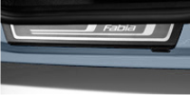

Izgled
Nova Fabia!
Izvršen je facelift modela Fabia koji se najbolje uočava kroz promjenu dizajna prednjeg dijela vozila. Vertikalne linije su zamijenjene horizontalnim. Potpuno nove eksterne boje i felge su dostupne a i izgled unutrašnjosti je izmijenjen. Fabia je postala naprednija
U ponudi su potpuno novi motori .
Pored već poznatih benzinskih motora 1.2/44 kW i 1,2/51 kW, tu je novi turbo benzinski motor 1.2 TSI sa 63 kW odnosno 77 kW zavisno od odabrane varijante. Ove osnažene verzije mogu se poručiti sa sedmo – stupanjskim automatskim DSG mjenjačem koji je zamijenio 6°automatski mjenjač Tiptronic.
Tu je i novi raspon dizelskih motora. Tu su 1.6 TDI CR/55 kW i 1.6 TDI CR sa 66 odnosno 77 kW zavisno od odabrane varijante. Ovi navedeni dizel motori koriste common rail tehnologiju ubrizgavanja goriva i opremljeni su sa DPF filterom protiv čestica štetnih gasova. Zajedno, benzinski motori i dizel motori u potpunosti ispunjavaju EU 5 normu emisije štetnih gasova
Novi 1.2 TSI benzinski motor odlikuje se nevjerovatnim performansama, odličnim ubrzanjem, tihim radom i malom potrošnjom goriva.
Spoljašnost
Promjena dizajna je učinila vanjski izgled Fabije više dinamičnijom i robusnijom. Horizontalne linije prednjeg branika sa novom maskom, sa modificiranim vizirom i haubom i novo dizajnirana maglo svijetla opremljena sa funkcijom dnevnih svjetala su optički prosirili prednji dio vozila
Paleta eksternih boja je dopunjena sa Pacific plavom i novom Rallye green metalik bojom. Ponuda felgi sada uključuje 16 cola Elba i Comet aluminijumske felge kao i potuno nove poklopce za 14 cola Comoros, odnosno 15 cola Sattellite čelične felge. Po prvi put model Fabia sada može biti poručen sa krovnim nosačima ( u crnoj ili crno/sivoj kombinaciji).
Unutrašnjost
Mnoge su promjene u unutrašnjosti modela koje ne samo da su povećale komfor putnika već i poboljšalje funkcionalnost i upravljivost samog vozila.
Novi multifunkcionalni upravljač sa tri ili četiri kraka omogućava jednostavniju kontrolu radio uređaja ili telefona dok je estetski gledano unutrašnjost unaprijeđena sa poboljšanjom instrument tablom koja sadrži nove kontrolne funkcije zajedno sa novim grafičkim dizajnom.
Klima uređaj i tipke za kontrolu izgledaju ljepše i kvalitetnije. Novi materijali i dizajn presvlaka su Domino i Chess dizajn zajedno sa Drops Blue dezenom
Udobnost
Udobnost i praktičnost
Opremite svojo vozilo prema Vašem životnom stilu! Snaga leži u jednostavnosti. Ako se slažete, izaberite verziju Classic opremljenu sa Stone sivim ili plavim interierom. Imate veće ambicije?
Ambiente paket opreme dolazi sa Domino sivim ili crnim interierom.
Za one koji žele luksuz tu je Chess interier koji dolazi sa Elegance paketom opreme, kao i mnogobrojne druge opcije interijera koje dolaze sa dodatnom opremom
Elektro podesivi i grijani vanjski retrovizori , električno pomjeranje prozora i centralno daljinsko zaključavanje su već standardna obilježja. Klima uređaj Climatronic sa elektronskom regulacijom će Vam pomoći u situacijama zamagljenosti i zaleđenosti prozora. Vašu omiljenu muziku sada možete slušati sa novim inovativnim radio uređajima, a navigacioni sistem će pronaći najbolju rutu za Vas.
Kontrolna tabla je napravljena od kvalitetnih i ugodnih materijala i nudi MaxiDOT multifunkcionalni display, a brzinomjer i obrtomjer sada imaju okvir od kroma.
Tu su i praktični pretinci za odlaganje na zadnjim i prednjim sjedištima, dosta više prostora za odlaganje na vozačevom i suvozačevom sjedištu i u vratima

Maglo svjetlo i dnevno svjetlo
Prednje maglo svijetlo dolazi sa funkcijom Dnevnog svjetla i imaju novi oblik a mogu biti opremljeni i sa Corner funkcijom zaokretanja
Radio Blues
Funkcije radio uređaja i dizajn su unapređeni. Radio Blues sa integrisanim pretincem za ostavu uključuje CD uređaj koji podržava Audio, MP3 i WMA zapise
MDI
Multimedijalni MDI priključak (kao opcionalna oprema) dozvoljava konekciju putem kabla i priključka za iPod, Aux-in (3.5mm priključak), USB i mini-USB player koji podržava MP3, WMA, OGG i AAC formate
Antares aluminijumske felge
15' Antares aluminijumske felge sa 195/55 R15 gumama stvaraju estetsku impresiju prilikom pogleda na vanjski dio vozila. Ponuda uključuje Line i ostale felge dimenzija 14, 16 i 17'
Sigurnost

Maksimalna robusnost, maksimalna sigurnost
Sve veći zahtjevi za povećanjem aktivne i pasivne sigurnosti nastavljaju se iz dana u dan.
Škoda vozila uspjevaju da u potpunosti ispune ove zahtjeve kao i da prate ovaj trend.
U zemljama EU ABS sistem uključuje MSR i Dual Rate vakum-asistent kočionih sistema i dolazi kao standardna oprema već u baznim modelima Fabia i Fabia Combi. S druge strane, struktura ostalih paketa koji sadrže elektronske asistente stabilnosti se promijenila. Paket ABS Plus (ABS, MSR, Dual Rate, sistem za kontrolu pritiska u gumama) i ESP Plus (ESP, ABS, MSR, ASR, EDS, HBA, Dual Rate, sistem za kontrolu pritiska u gumama, start-up asistent) su od sada dostupni. Još jedna novost kod novog modela Fabije je sistem za pomoć pri kretanju uzbrdo već dobro poznat kod modela Octavia, Yeti i Superb-a.
Oprema može da uključi i zračne jastuke za vozača i suvozača kao i bočne zračne jastuke naprijed sa sistemom za upozerenje nevezanog pojasa za vozača. Na zahtjev vozilo se može opremiti sa zračnim jastucima za glavu.
Još jedna sigurnosna stavka uključuje tri tačke vezivanja sigurnosnih pojasa (podesivi po visini naprijed), naslone za glavu naprijed i nazad, prostor za postavljanje ISOFIX dječijeg sjedišta na zadnjem sjedištu te zaštitni sistem za protok goriva u slučaju nezgode.
Prednja svijetla
Projektor halogen prednja svjetla su doživila tehničke promjene i promjene u dizajnu. Za dugo svijetlo tu je sada posebna sijalica , dok oborena svijetla rade pomoću projektor. Optički aktivna površina je povećana što je poboljšalo kompletnu iluminaciju prednjih svjetala
Zračni jastuci za glavu
Nakon aktivacije zračni jastuci za glavu kreiraju zid čitavom stranom interijera. Na taj način oni štite ne samo putnike naprijed nego i putnike nazad u slučaju nezgode.

U slučaju nezgode
U slučaju nezgode upozoravajuće svijetlo i interno osvjetljenje se uključuju automatski, a sistem centralnog otključavanja se aktivira. Kako bi se spriječio rizik požara pumpa za gorivo se gasi i prekida dovod od spremnika goriva.

Zaštita pješaka
Fabia vozilo poštuju EU direktive vezane za zaštitu pješaka. Rizik povrede u slučaju sudara je dosta smanjen zahvaljujući prostoru između haube i fiksnih elemenata motora , Prednji branik dizajniran je tako da apsorbuje najveći dio energije u slučaju sudara.
Oprema
Škoda oprema
Škoda vozila su dizajnirani za maksimalnu udobnost, praktičnost i sigurnost. Nova Fabia još bolje odgovara vašim specifičnim potrebama i zahtjevima, pripremili smo niz Škoda opreme.
Proizvodi u rasponu od Škoda originalnog pribora karakteriziraju dugi vijek trajanja, sigurnost, izvornu tehnička rješenja i savršeno odgovaraju vašem ljubimcu.
Za Fabiu Scout možete odabrati razne proizvode spojlerimi i alu felge, radio, navigacijski sustavi, nosači za skije. Možete birati iz širokog spektra dječjih sjedalica. Da biste dodali svoj novi sportski Fabije je spremno za Vas jedinstveni styling kit.
Tepisi
Iz Škoda originalnog pribora nudimo tekstilne i gumene prostirače s natpisima Fabije. Tekstilni prostirači daju unutrašnjosti vašeg automobila izgleda više raskošnosti, a gumeni prostiračima možete zaštititi unutrašnjost od kontaminacije posebno u zimskim mjesecima.
Nosač za bicikle
Škoda originalan pribor nudi brojne jednostavne i sigurne proizvode koje vam omogućuju povećati kapacitet prijevoza vozila.
Novo za Fabiu je nosač bicikla koji se montira na kuku, a može nositi dva bicikla.

Ukrasna vrata praga
Ukrasna vrata prag pokriva od nehrđajućeg čelika u novoj Škoda Fabiji će krasiti ulazna vrata na prednje i stražnje sjedište. Osim toga, oni također imaju praktičnu funkcija a to je da spriječi grebanje ili druge mehaničkih oštećenja prag vrata.
Dječije sjedište ISOFIX
Sve originalne Škoda dječje sjedalice su prošli vrlo zahtjevni testovi, te su stoga najsigurnije i vrlo udobna. ISOFIX sistem omogućuje njihovu izravnu povezanost s tijelom.